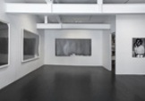
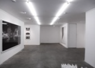
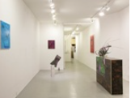

Chelsea
In Chelsea's converted industrial spaces, you'll find art galleries hosting group shows by up-and-comers, blockbuster exhibitions from art-world celebrities and a slew of provocative work. Here are the best galleries; click through to see what they're showing now.
Lower East Side
The East Village and Lower East Side has been the epicenter for new art ever since Gracie Mansion opened her salon style gallery out of her bathroom in the early 70's. It rivals Chelsea for the newest works of art. There are over 40 galleries located below Bowery through the East side as far south as Canal. Below are three of the hotest.
Ramiken Crucible
Musician and artist Mike Egan established this small downtown space in September of 2009, as a way of showcasing work by artists he likes who don't have representation in New York, or whose practice isn't supported by the traditional gallery structure. Pulling from the DIY aesthetic he admires, Egan regularly hosts a variety of music performances at his space.

Lisa Cooley
Formerly director of Houston's Mixture Gallery and Nicole Klagsbrun in Chelsea, Lisa Cooley opened her shop in 2008, and quickly established herself as one of the nabe's go-to gallerists. Her roster of artists seems to share a penchant for Conceptualist sleight-of-hand, mixed with unexpected materials—most notably Erin Shirreff's "moonrock" photos (actually images of hand-fashioned clay blobs) and Josh Faught's fiber-art sculptures made from woven afghans, garden trellises and nail polish.

Sperone Westwater
This contemproary art gallery—started by Italian art dealer Gian Enzo Sperone, Angela Westwater and German art dealer Konrad Fischer—is as old-school as it gets, having opened in 1975 in Soho, back when artists actually lived there. The gallery shortened its name to Sperone Westwater in 1982, and in 2002 moved to West 13th Street in the Meatpacking District. Eight years later, the gallery moved to its current home, an eight-storey, purpose-built showcase designed by starchitects Foster + Partners. One innovative feature of the place: a moving exhibiton hall—actually a 12-by-20-by-13-foot elevator that can be connected to any one of the floors to extend the viewing space.
